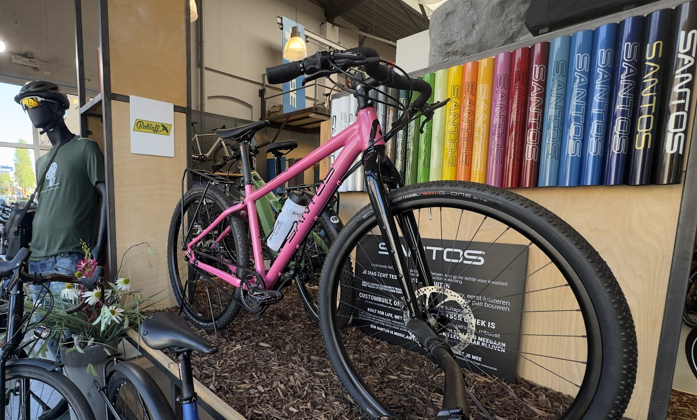
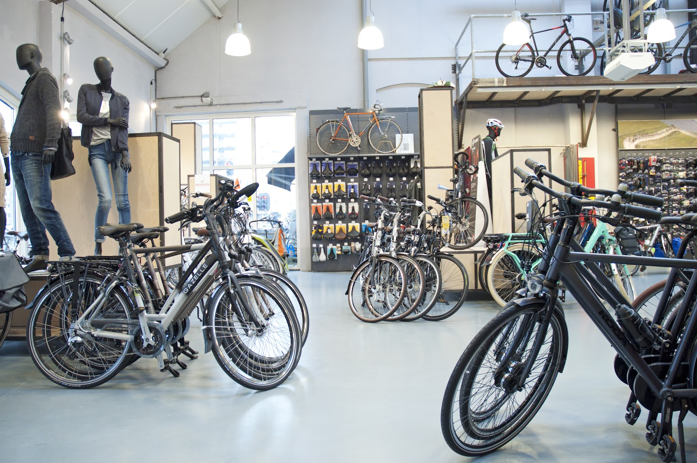
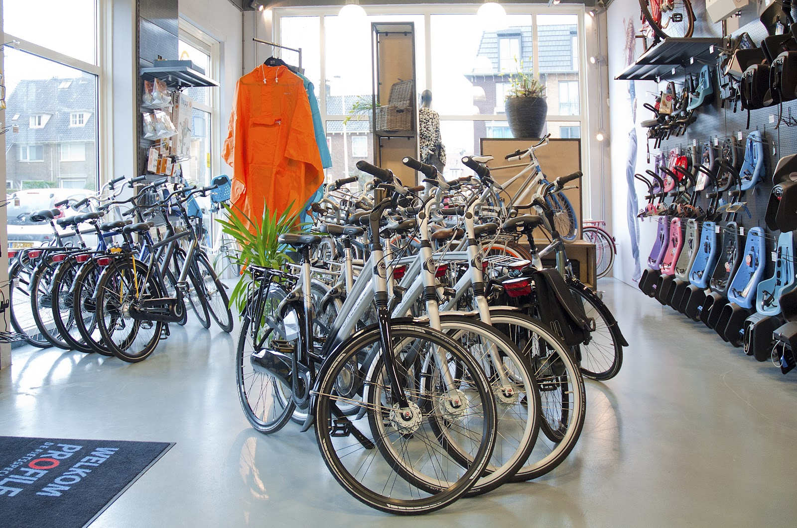
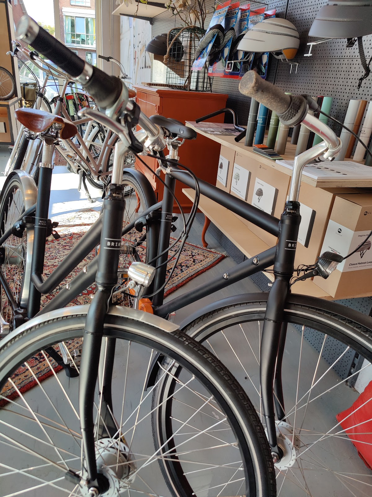
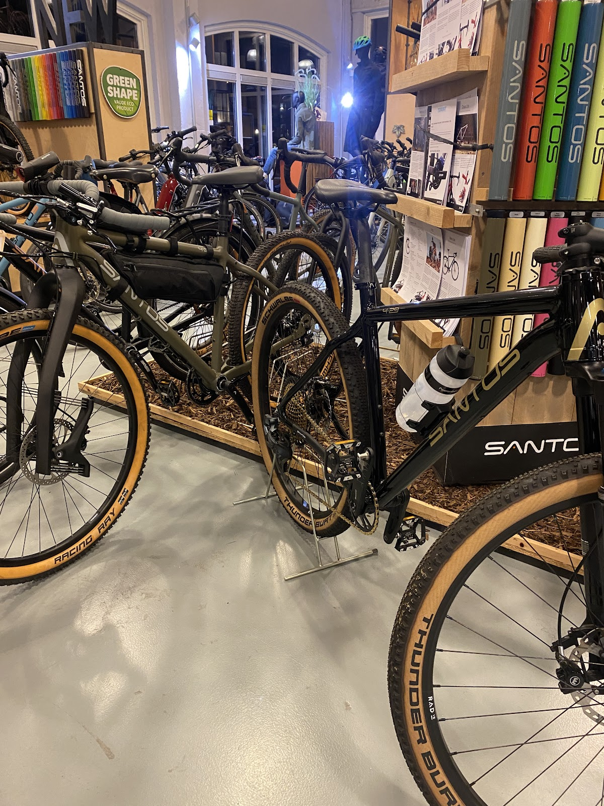
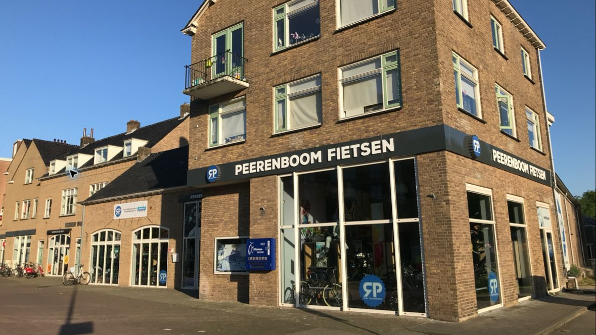

Een fiets kopen bij mensen die er verstand van hebben.
Fietsenwinkel en werkplaats aan de Lawickse Allee in Wageningen. Wij nemen de tijd voor advies, een proefrit en het onderhoud daarna.

4,7 van 5 sterren uit 282 Google-reviews
Lawickse Allee 5, Wageningen
Dinsdag tot en met zaterdag open
Royale keus, en iemand die met u meedenkt.
In de winkel staan stadsfietsen, e-bikes, toer- en gravelfietsen naast elkaar. U vertelt waar u naartoe fietst en wat u belangrijk vindt, wij zoeken er de fietsen bij die passen. Twijfelt u tussen een paar? Dan maakt u gewoon een proefrit.
Daarnaast vindt u bij ons kinderzitjes, tassen, helmen, zadels en regenkleding.
In de winkel onder meer: Santos, Gazelle, Koga, Sparta, Stevens en Brik Bikes.



Ook na de aankoop staan we voor u klaar.
Een goede fiets verdient goed onderhoud. Onze monteurs kennen de fietsen die we verkopen van binnen en van buiten.
-
Advies en proefrit
We kijken samen naar uw wensen voordat we fietsen laten zien. Daarna stapt u op en voelt u zelf het verschil, ook bij e-bikes.
-
Onderhoud en reparatie
Een beurt, een lekke band of een versleten ketting: breng uw fiets naar de werkplaats aan de Lawickse Allee. Bel even voor een afspraak.
-
Service na aankoop
Vragen over uw fiets, een onderdeel dat u nodig heeft? Bel, mail of kom langs. U hoort snel van ons.

Santos-rijders weten ons te vinden.
Voor een Santos, of het onderhoud ervan, komen klanten van ver. We laten u graag zien hoe uw fiets in elkaar zit, zodat u er zelf meer van begrijpt.
"Vandaag een leerzame en aangename dag gehad tijdens het begeleide onderhoud van onze fietsen. Een aanrader als je meer wilt begrijpen van je Santos fiets!"
Wat klanten over ons zeggen.
4,7 / 5 gemiddeld uit 282 Google-reviews
"Zeer deskundig en met een geweldige (after sales) service. Men komt hier uit heel Nederland naar toe vanwege het vakbekwame personeel.
Zeer royale keus aan allerlei fietsen. Erg prettig geholpen door adviseur Wessel Suijker."
"Een goed gesprek gevoerd met Roel Peereboom over de aanschaf van een toekomstige lichtgewicht E-bike. Hij had van tevoren nagedacht over mijn wensen. Fijne winkel ook met altijd behulpzame monteurs. Aankoop geslaagd."
"We hebben op een aantal fietsen een proefrit mogen maken en ze namen alle tijd voor ons. Je voelt je hier gelijk thuis. Erg vriendelijk personeel met veel kennis van zaken en ze denken gelijk goed met je mee."
"Maar wat Roel en zijn team nog meer onderscheidt, is hun zeer goede service. Appjes worden razendsnel beantwoord, onderdelen worden direct opgestuurd, en ze nemen altijd uitgebreid de tijd voor je."
Openingstijden
Tussen de middag zijn we een uur dicht, op zaterdag niet.

Peerenboom FietsenLawickse Allee 5
6701 AN Wageningen